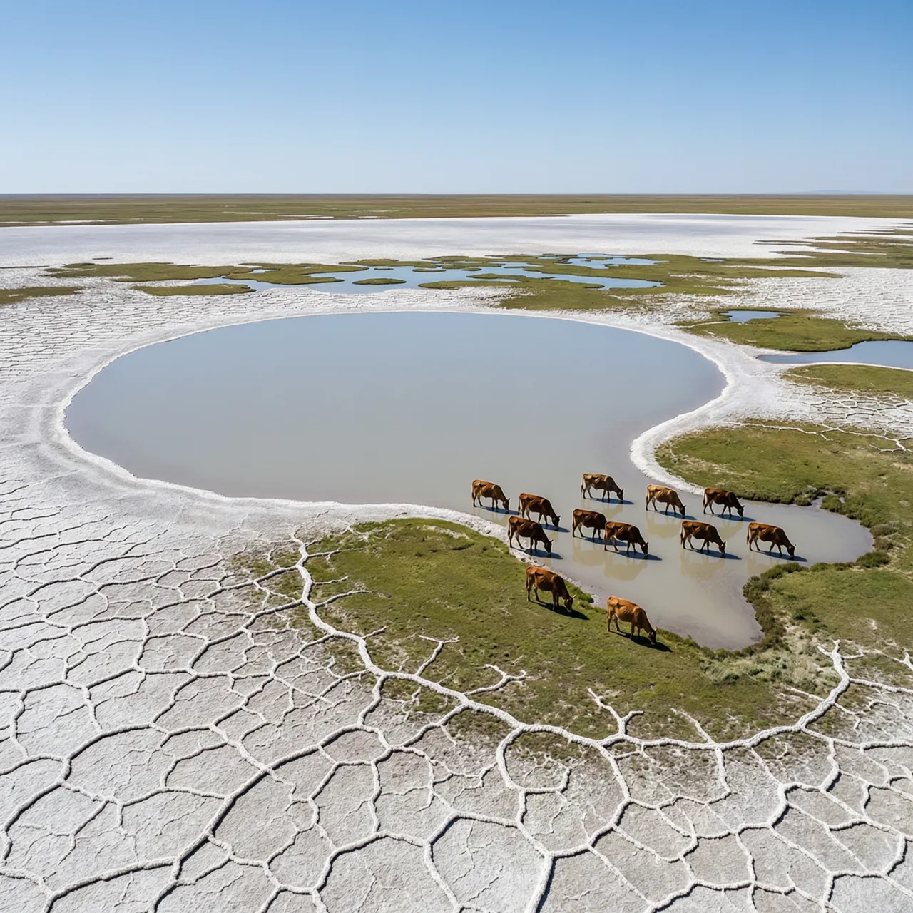
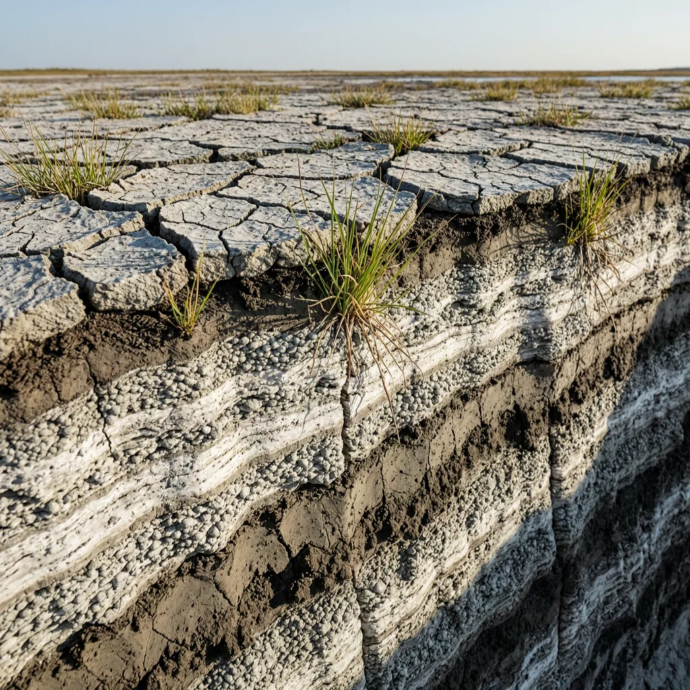

四万年间胀缩过四次，它还曾顺着尼日尔河流进大西洋

上世纪70年代中期以后，这个湖在地图上一年年往里缩：面积从19世纪记录的约2.8万平方千米，跌到2000至5000平方千米之间。但湖盆地层里埋着厚厚的硅藻土——那是它四次胀成巨型大湖时，沉进水底的硅藻外壳。它的历史不是一条单向下行的线。
乍得湖躺在乍得盆地中央，盆地由非洲地盾凹陷而成，湖本身是第四纪古乍得海的残余。公元前39000年至公元前300年间，它经历过四个鼎盛期：最大时面积约34万平方千米，最深约160米，湖面海拔约325米，湖水经凯比河注入贝努埃河，再沿尼日尔河流进大西洋。今天的内流湖，曾是入海水系的一环。
它的涨缩由萨赫勒雨带说了算：湖没有出口，全凭季节性河流把湿季的水送进盆地。湿润期雨带北移，补给远大于蒸发，湖面能铺开到现在的好几倍；干期雨带南退，蒸发反超，裸露的湖缘先变成盐滩，湖界向盆地最低处收缩几十甚至上百千米。湖盆极浅，水位稍一变，地图上的岸线就得搬家——这不是修辞，是浅湖对雨带的放大反应。
最近一轮大收缩始于1970年代中期：气候变干叠加人类引水灌溉，至于两者各占多大比重，至今没有公认拆分。面积掉到2000至5000平方千米之间波动，湖界附近的渔业、牧场和用水之争随之紧张，引发一连串环境与社会问题。但把时间轴拉回四万年，这种收缩并非头一回——雨带若再回来，湖水还会涨。卡努里人至今叫它Sádǝ：名字里没有边界，湖挪了，名字不动。

河马和犀牛湖—— 克劳狄乌斯·托勒密所记公元1世纪罗马人远征撒哈拉时对该湖区的称呼